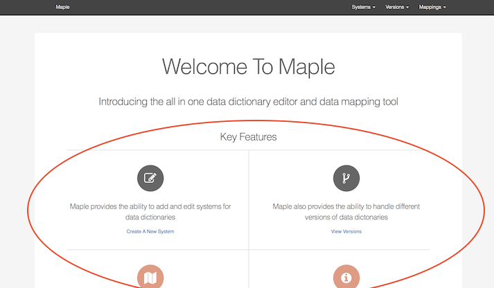

Fifth Iteration
After gathering feedback from our client regarding our fourth iteration, we spent time implementing the changes that he requested. Our fifth iteration was our final iteration cycle and we are confident that we have completed all our requirements to a good standard. Our final cycle consisted of a change in style, giving our application a more professional feel with with an updated home page and colour scheme. Our project now fulfils the following requirements:
- RQ1: The application must be a data dictionary editor
- RQ2: The application must be able to create a data dictionary (logical and physical) for the required system e.g. for a customer system or for a payroll system
- RQ3: The application should be able to load the data dictionary for OpenEyes into the application
- RQ4: The application should ensure that the data dictionaries can handle the versioning of systems
- RQ5: The application should ensure that the data dictionary items can be mapped to other items of another system or version
- RQ7: The application should be able to load data models
- RQ8: The application should be able to compare data models
- RQ10: The application should allow a data dictionary to be mapped to other data dictionaries
- RQ11: The application must have a screen for loading data dictionaries
- RQ12: The application must have a screen that enables the maintenance of a single data dictionary (adding and removal of columns)
- RQ13: The application must have a screen for loading data
- RQ14: The application must have a screen that gives access to the default mapping tool
- RQ15: The application must accept systems and data dictionaries as its data (content for the application)
- RQ16: The application must define a data model for our data dictionary
- RQ17: The data dictionary should have have the ability to be augmented (can grow in size)

We updated our home page during this development iteration to include Maple's key features and shortcut links to each of those features. We also updated our colour scheme which was used throughout our application.

An example of our updated design taking affect on the mapping page.

When the two systems and its version are chosen, we now display this on the mappings page. This was a request by the client as during the last iteration demonstration he felt that the choice made wasn't clearly shown on the page.

Another added feature was to show any current mappings between the two chosen systems and versions. This was because the client felt that it was difficult to remember mappings that had been made already and duplicate mappings should not be made.

At the bottom of the page, we show the Data Points from each of the selected versions. Our new update consists of a radio button for the selection of the data points to map which is easier and clearer than the manual input in the previous version. We also added the option for a mapping comment which the client asked us to add via email.
Client Feedback
As this was our final iteration, we did not get feedback as we had done with our previous iterations. We showed our client our finished product and allowed him to test it as he would use it once it is handed over to him. We asked him to summarise his findings and these can be found in the testing section. Any additional features he mentioned were added to our evauluation and future development section.